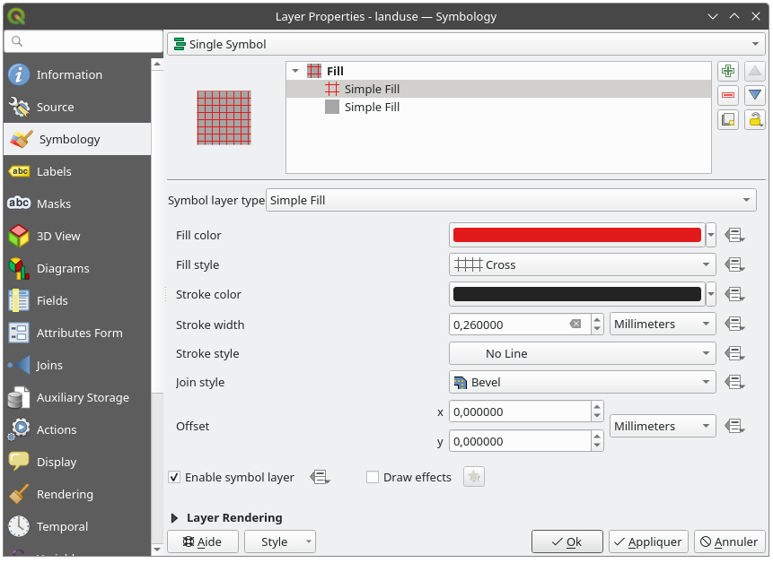
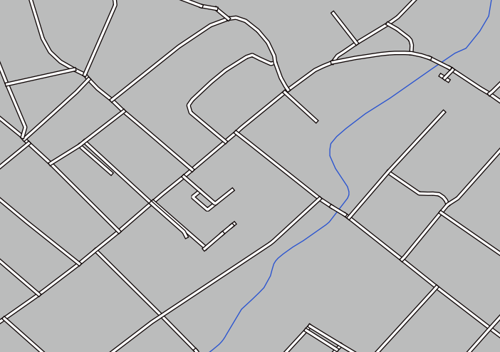
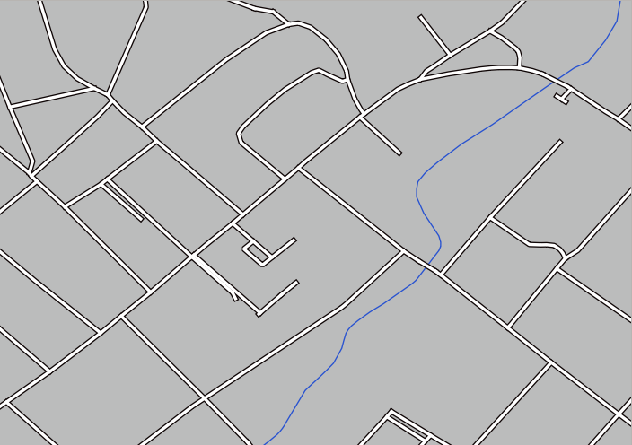
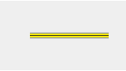
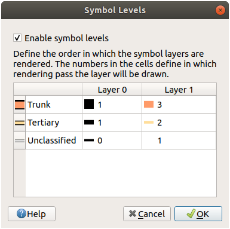
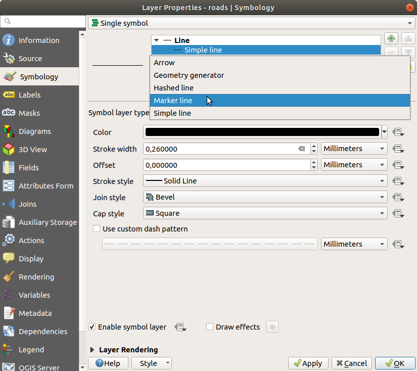
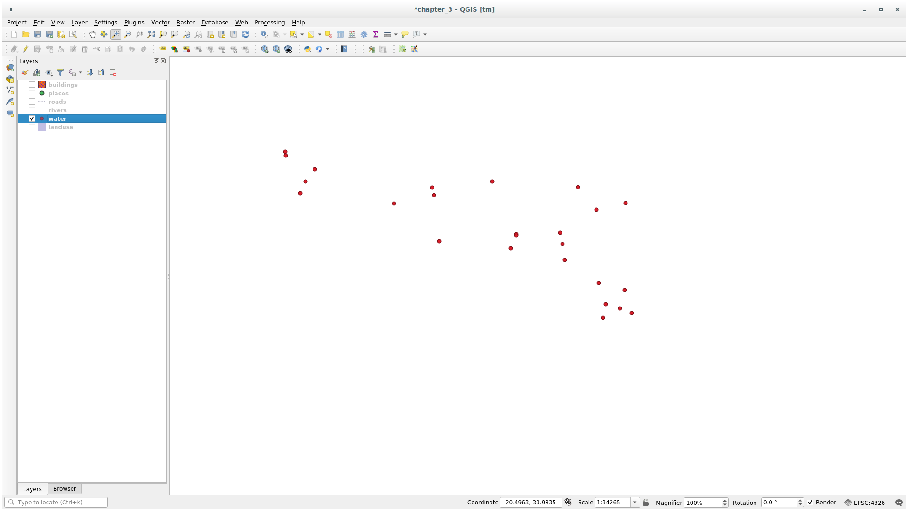

The symbology of a layer is its visual appearance on the map.
The basic strength of GIS over other ways of representing data with spatial
aspects is that with GIS, you have a dynamic visual representation of the data
you’re working with.
Therefore, the visual appearance of the map (which depends on the symbology of
the individual layers) is very important. The end user of the maps you produce
will need to be able to easily see what the map represents. Equally as
important, you need to be able to explore the data as you’re working with it,
and good symbology helps a lot.
In other words, having proper symbology is not a luxury or just nice to have.
In fact, it’s essential for you to use a GIS properly and produce maps and
information that people will be able to use.
The goal for this lesson: To be able to create any symbology you want for
any vector layer.
To change a layer’s symbology, open its Layer Properties. Let’s
begin by changing the color of the landuse layer.
Right-click on the landuse layer in the layers list.
Select the menu item Properties… in the menu that appears.
Note
By default, you can also access a layer’s properties by
double-clicking on the layer in the Layers list.
Tip
The button at the top of the Layers
panel will open the Layer Styling panel. You can use this
panel to change some properties of the layer: by default, changes will be
applied immediately!
In the Layer Properties window, select the Symbology tab:
Click the color select button next to the Color label.
A standard color dialog will appear.
Choose a gray color and click OK.
Click OK again in the Layer Properties window, and
you will see the color change being applied to the layer.
Change the color of the water layer to light blue. Try to use the
Layer Styling panel instead of the Layer Properties menu.
Solution
Verify that the colors are changing as you expect them to change.
It is enough to select the water layer in the legend and then click
on the Open the Layer Styling panel button. Change the color
to one that fits the water layer.
If you want to work on only one layer at a time and don’t want the
other layers to distract you, you can hide a layer by clicking in the checkbox
next to its name in the layers list. If the box is blank, then the layer
is hidden.
2.4.3. ★☆☆ Follow Along: Changing Symbol Structure
This is good stuff so far, but there’s more to a layer’s symbology than just
its color. Next we want to eliminate the lines between the different land use
areas so as to make the map less visually cluttered.
Open the Layer Properties window for the landuse
layer.
Under the Symbology tab, you will see the same kind
of dialog as before. This time, however, you’re doing more than just quickly
changing the color.
In the symbol layers tree, expand the Fill dropdown
and select the Simple fill option.
Click on the Stroke style dropdown. At the moment, it should be
showing a short line and the words Solid Line.
Change this to No Line.
Click OK.
Now the landuse layer won’t have any lines between areas.
Change the water layer’s symbology again so that it has a
darker blue outline.
Change the rivers layer’s symbology to a sensible representation
of waterways.
Remember: you can use the Open the Layer Styling panel
button and see all the changes instantly. That panel also allows you to undo
individual changes while symbolizing a layer.
Answer
Your map should now look like this:
If you are a Beginner-level user, you may stop here.
Use the method above to change the colors and styles for all the remaining
layers.
Try using natural colors for the objects. For example, a road should not be
red or blue, but can be gray or black.
Also feel free to experiment with different Fill style and
Stroke style settings for the polygons.
Sometimes you will find that a layer is not suitable for a given scale. For
example, a dataset of all the continents may have low detail, and not be very
accurate at street level. When that happens, you want to be able to hide the
dataset at inappropriate scales.
In our case, we may decide to hide the buildings from view at small scales. This
map, for example…
… is not very useful. The buildings are hard to distinguish at that scale.
To enable scale-based rendering:
Open the Layer Properties dialog for the buildings layer.
Activate the Rendering tab.
Enable scale-based rendering by clicking on the checkbox labeled
Scale dependent visibility:
Change the Minimum value to 1:10000.
Click OK.
Test the effects of this by zooming in and out in your map, noting when the
buildings layer disappears and reappears.
Note
You can use your mouse wheel to zoom in increments.
Alternatively, use the zoom tools to zoom to a window:
Now that you know how to change simple symbology for layers, the next step is
to create more complex symbology. QGIS allows you to do this using symbol
layers.
Go back to the landuse layer’s symbol properties panel (by clicking
Simple fill in the symbol layers tree).
In this example, the current symbol has no outline (i.e., it uses the
No Line border style).
Select the Fill level in the tree and click
the Add symbol layer button.
The dialog will change to look something like this, with a new symbol layer
added:
It may appear somewhat different in color, for example, but you’re going
to change that anyway.
Now there’s a second symbol layer. Being a solid color, it will of course
completely hide the previous kind of symbol. Plus, it has a Solid
Line border style, which we don’t want. Clearly this symbol has to be changed.
Note
It’s important not to get confused between a map layer and a symbol
layer. A map layer is a vector (or raster) that has been loaded into the
map. A symbol layer is part of the symbol used to represent a map layer.
This course will usually refer to a map layer as just a layer, but a symbol
layer will always be called a symbol layer, to prevent confusion.
With the new Simple Fill symbol layer selected:
Set the border style to No Pen, as before.
Change the fill style to something other than Solid or
No brush. For example:

Click OK.
Now you can see your results and tweak them as needed.
You can even add multiple extra symbol layers and create a kind of texture for
your layer that way.
It’s fun! But it probably has too many colors to use in a real map…
When symbol layers are rendered, they are also rendered in a sequence, similar
to the way the different map layers are rendered. This means that in some cases,
having many symbol layers in one symbol can cause unexpected results.
Give the roads layer an extra symbol layer (using the method
for adding symbol layers demonstrated above).
Give the base line a Stroke width of 1.5 and a black color.
Give the new, uppermost layer a thickness of 0.8 and a white color.
You’ll notice that this happens:

Well, roads have now a street like symbology, but you see that lines are
overlapping each others at each cross. That’s not what we want at all!
To prevent this from happening, you can sort the symbol levels and thereby
control the order in which the different symbol layers are rendered.
To change the order of the symbol layers:
Select the topmost Line layer in the symbol layers tree.
Click Advanced ► Symbol levels… in the
bottom right-hand corner of the window.
This will open a dialog like this:
Check Enable symbol levels. You can then set the
layer order of each symbol by entering the corresponding level number.
0 is the bottom layer.
In our case, we just want to activate the option, like this:
This will render the white line above the thick black line borders:
Click OK twice to return to the map.
The map will now look like this:

When you’re done, remember to save the symbol itself so as not to lose your
work if you change the symbol again in the future. You can save your current
symbol style by clicking the Save Style… button at the bottom
of the Layer Properties dialog.
We will be using the QGIS QML Style File format.
Save your style in the solution/styles/better_roads.qml folder. You can load a
previously saved style at any time by clicking the Load Style…
button. Before you change a style, keep in mind that any unsaved style you are
replacing will be lost.
Make the roads narrow and yellow, with a thin, pale gray outline and a
thin black line in the middle. Remember that you may need to change the layer
rendering order via the Advanced ► Symbol levels… dialog.

Answer
To make the required symbol, you need three symbol layers:
The lowest symbol layer is a broad, solid gray line. On top of it there is a
slightly thinner solid yellow line and finally another thinner solid black line.
If your symbol layers resemble the above but you’re not getting the result
you want:
Check that your symbol levels look something like this:
Symbol levels also work for classified layers (i.e., layers having multiple
symbols). Since we haven’t covered classification yet, you will work with some
rudimentary pre-classified data.
Create a new project and add only the roads dataset.
Apply the style file advanced_levels_demo.qml provided in
exercise_data/styles to the layer. This can be done through the
Style ► Load Style… combobox at the bottom of the
Layer Properties dialog.
Zoom in to the Swellendam area.
Using symbol layers, ensure that the outlines of layers flow into one another
as per the image below:
Answer
Adjust your symbol levels to these values:

Experiment with different values to get different results.
Open your original map again before continuing with the next exercise.
In addition to setting fill colors and using predefined patterns, you can use
different symbol layer types entirely. The only type we’ve been using up to now
was the Simple Fill type. The more advanced symbol layer types allow
you to customize your symbols even further.
Each type of vector (point, line and polygon) has its own set of symbol layer
types. First we will look at the types available for points.
Change the symbol properties for the places layer:
You can access the various symbol layer types by selecting the
Simple marker layer in the symbol layers tree, then
click the Symbol layer type dropdown:
Investigate the various options available to you, and choose a symbol with
styling you think is appropriate.
If in doubt, use a round Simple marker with a white border and
pale green fill, with a Size of 3.00 and a
Stroke width of 0.5.
To see the various options available for line data:
Change the Symbol layer type for the roads layer’s
topmost symbol layer to Marker line:

Select the Simple marker layer in the symbol layers
tree. Change the symbol properties to match this dialog:
Select the Marker line layer and change the interval to 1.00:
Ensure that the symbol levels are correct (via the
Advanced ► Symbol levels dialog we used earlier) before
applying the style.
Once you have applied the style, take a look at its results on the map. As you
can see, these symbols change direction along with the road but don’t always
bend along with it. This is useful for some purposes, but not for others. If
you prefer, you can change the symbol layer in question back to the way it was
before.
To see the various options available for polygon data:
Change the Symbol layer type for the water layer, as
before for the other layers.
Investigate what the different options on the list can do.
Choose one of them that you find suitable.
If in doubt, use the Point pattern fill with the following
options:
Add a new symbol layer with a normal Simple fill.
Make it the same light blue with a darker blue border.
Move it underneath the point pattern symbol layer with the Move
down button:
As a result, you have a textured symbol for the water layer, with the added
benefit that you can change the size, shape and distance of the individual dots
that make up the texture.
You can use the Geometry generator symbology with all layer types (points, lines
and polygons). The resulting symbol depends directly on the layer type.
Very briefly, the Geometry generator symbology allows you to run some spatial
operations within the symbology itself. For example you can run a real centroid
spatial operation on a polygon layer without creating a point layer.
Moreover, you have all the styling options to change the appearance of the resulting
symbol.
Let’s give it a try!
Select the water layer.
Click on Simple fill and change the Symbol layer type
to Geometry generator.
Before to start writing the spatial query we have to choose the Geometry Type
in output. In this example we are going to create centroids for each feature,
so change the Geometry Type to Point / Multipoint.
Now let’s write the query in the query panel:
centroid($geometry)
When you click on OK you will see that the water layer
is rendered as a point layer! We have just run a spatial operation within the
layer symbology itself, isn’t that amazing?

With the Geometry generator symbology you can really go over the edge of normal
symbology.
Geometry generator are just another symbol level. Try to add another
Simple fill underneath the Geometry generator one.
Change also the appearance of the Simple marker of the Geometry generator symbology.
The final result should look like this:
Answer
Click on the button to add another Symbol level.
Move the new symbol at the bottom of the list clicking the button.
Choose a good color to fill the water polygons.
Click on Marker of the Geometry generator symbology and change the
circle with another shape as your wish.
Try experimenting other options to get more useful results.
2.4.14. ★★★ Follow Along: Creating a Custom SVG Fill
Note
To do this exercise, you will need to have the free vector editing
software Inkscape installed.
Start the Inkscape program.
You will see the following interface:
You should find this familiar if you have used other vector image editing
programs, like Corel.
First, we’ll change the canvas to a size appropriate for a small texture.
Click on the menu item File ► Document Properties. This
will give you the Document Properties dialog.
Change the Units to px.
Change the Width and Height to 100.
Close the dialog when you are done.
Click on the menu item View ► Zoom ► Page to see the
page you are working with.
Select the Circle tool:
Click and drag on the page to draw an ellipse. To make the ellipse turn into
a circle, hold the Ctrl button while you’re drawing it.
Right-click on the circle you just created and open its Fill and
Stroke options. You can modify its rendering, such as:
Change the Fill color to a somehow pale grey-blue,
Assign to the border a darker color in Stroke paint tab,
And reduce the border thickness under Stroke style tab.
Draw a line using the Pencil tool:
Click once to start the line. Hold Ctrl to make it snap to increments
of 15 degrees.
Move the pointer horizontally and place a point with a simple click.
Click and snap to the vertex of the line and trace a vertical line, ended
by a simple click.
Now join the two end vertices.
Change the color and width of the triangle symbol to match the circle’s stroke
and move it around as necessary, so that you end up with a symbol like this one:
If the symbol you get satisfies you, then save it as landuse_symbol
under the directory that the course is in, under exercise_data/symbols,
as SVG file.
In QGIS:
Open the Layer Properties for the landuse layer.
In the Symbology tab, change the symbol structure by
changing the Symbol Layer Type to SVG Fill
shown below.
Click the … button and then
Select File… to select your SVG image.
It’s added to the symbol tree and you can now customize its different
characteristics (colors, angle, effects, units…).
Once you validate the dialog, features in landuse layer should now
be covered by a set of symbols, showing a texture like the one on the
following map. If textures are not visible, you may need to zoom in the map
canvas or set in the layer properties a bigger Texture width.
Changing the symbology for the different layers has transformed a collection of
vector files into a legible map. Not only can you see what’s happening, it’s
even nice to look at!
Changing symbols for whole layers is useful, but the information contained
within each layer is not yet available to someone reading these maps. What are
the streets called? Which administrative regions do certain areas belong to?
What are the relative surface areas of the farms? All of this information is
still hidden. The next lesson will explain how to represent this data on your
map.
 button at the top of the Layers
panel will open the Layer Styling panel. You can use this
panel to change some properties of the layer: by default, changes will be
applied immediately!
button at the top of the Layers
panel will open the Layer Styling panel. You can use this
panel to change some properties of the layer: by default, changes will be
applied immediately!


 Rendering tab.
Rendering tab.

{kind=link}
 Add symbol layer button.
The dialog will change to look something like this, with a new symbol layer
added:
Add symbol layer button.
The dialog will change to look something like this, with a new symbol layer
added:


 Enable symbol levels. You can then set the
layer order of each symbol by entering the corresponding level number.
0 is the bottom layer.
Enable symbol levels. You can then set the
layer order of each symbol by entering the corresponding level number.
0 is the bottom layer.


 button.
button.